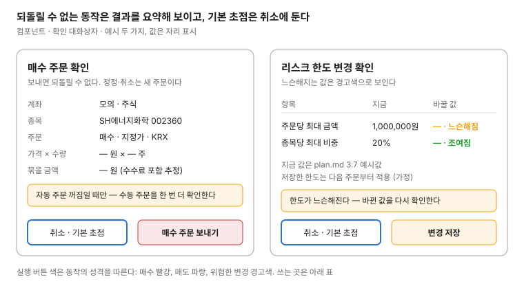

확인 대화상자
되돌릴 수 없는 동작은 모두 이 대화상자를 거친다. 무엇에 어떤 결과가 나는지 요약해 보이고, 기본 초점은 취소에 둔다.

| 동작 | 요약에 보일 것 | 실행 버튼 |
|---|---|---|
| 매수·매도 주문 | 계좌, 종목, 방향·방식·시장, 가격 × 수량, 묶을 금액 또는 수량 | 매수 빨강 / 매도 파랑 |
| 자동 주문이 꺼진 동안의 수동 주문 | 위 주문 요약 + "자동 주문 꺼짐" 경고 줄. 실행 버튼 문구는 "꺼진 상태에서 보내기" | 경고 |
| 정정 | 대상 번호, 바뀌는 가격·수량, 새 번호가 생긴다는 안내 | 기본 |
| 취소, 미체결 주문 취소 실행 | 번호별 취소 수량, 낸 쪽(수동·전략·강제 청산) | 경고 |
| 자동 주문 끄기 | 막히는 것(강제 청산 포함)과 그대로인 것 | 경고 |
| 자동 주문 켜기 | 켜지는 즉시 나갈 강제 청산 목록 | 경고 |
| 계좌 등록 | 환경·종류·계좌번호 끝 2자리, 등록 뒤 환경을 못 바꾼다는 안내 | 기본 |
| 리스크 한도 저장 | 바뀌는 값의 지금 → 새 값, 느슨해짐·조여짐. 조이기만 해도 확인한다 | 느슨해지면 경고 |
| 전략 파라미터 저장 | 바뀌는 값, 적용 시점(다음 거래일 07:00) | 기본 |
| 전략 상태 전환·멈춤 | 지금 상태 → 새 상태, 새 주문이 나가는지 | 경고 |
| 리셋 판정 뒤 다시 켜기 | 닫히는 포지션 계획, 새 성과 구간 | 경고 |
| 실전 전환 (M7) | 점검표 결과, 실전 계좌, 리스크 한도, 계좌번호 끝자리 입력. 자동 주문 꺼짐·리셋 판정 중에는 열지 않는다 | 위험 |